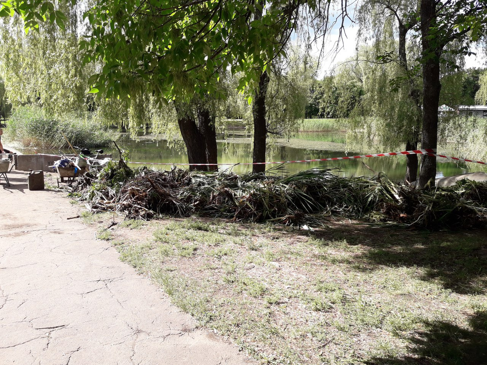

Наши работы

ЗАЧЕМ вы спросите мы этим занялись? Для чего всё это нам нужно? (ведь идея требует значительных затрат). Мы часто слышим эти вопросы, кратко ответить не получиться каждому (иногда отвечаем: а почему этого до нас никто не начал! Озеро в Юбилейном парке - это как сердце города! И если оставить всё как есть, оно просто может остановиться. Так вот - ответ подробнее для каждого: В летнюю пору люди стремятся выбраться на природу. Свежий воздух, лес, пение птиц успокаивают и способствуют поднятию настроения. Отныне Краматорчане смогут наслаждаться природой, не покидая пределов родного города. Началась активная работа по облагораживанию берегов водоема и лесопарка. Зона отдыха на Юбилейном озере, стала первым объектом в этом году, которое начали молодые жители и уже на верном пути. Скоро озеро в парке подвергнется первому этапу благоустройства. Декоративные ограждения, цветники, дорожки, скамейки значительно преобразят данную местность. Первый этап начался с очистки поверхности. Окончить соответствующие работы планируется к концу июля 2017 года. С этой целью были произведены начальные работы для того чтоб начать –завоз песка, облагораживание прилегающей территории. Подобные преображения ждут зону отдыха «Озеро юбилейное». Уже в текущем году – при вашей поддержке, здесь могут появиться, шезлонги, скамейки, дорожки, мост для влюбленных, велопарковка, площадки для активных спортивных игр и т.п. Главный объем работ запланирован для обустройства зоны отдыха при поддержки горожан. И возможно уделим наибольшее внимание, тому что именно здесь проведём разные спортивные соревнования, праздники, общественные мероприятия, и если мер поспособствует быстрейшему разрешению этого вопроса. То к концу лета на территории озера появятся теннисные, детские, волейбольные площадки, гимнастические комплексы «Workout», регби, пикниковые зоны, зонтики, Стрельба из лука и т.д.
В дальнейшем мы хотим сделать так, что озеро будет не просто техническим водоёмом, а хранилищем затопленного сокровища, так и не раскрытой тайны ушедших времен. «Из болота в озеро» превратит в сокровище само озеро, хранящее воспоминания и открывающее перспективное будущее города. Вода превратит легенды Краматорска в реальные истории, приходящие к нам из прошлых советских времён и продолжающие жить в будущих веках. Сокровище озера, станет доступно каждому. «Из болота в озеро» – эко-культурный проект, благодаря которому для социальной активности будет место как на берегу, так и непосредственно в водах озера. Вдоль береговой линии будет создаваться новое окружение, а вокруг парка будут возникать водопады, водные потоки. Даже дождевые и сточные воды будут связаны в единую систему, способствуя сохранению природного, культурного и социального комфорта. План комплексного развития окрестностей озера будет способствовать дальнейшему превращению в мульти культурный отдых высокого уровня, где представители различных этнокультурных групп и религий сосуществуют в мире, безопасности и гордятся своим городом.
